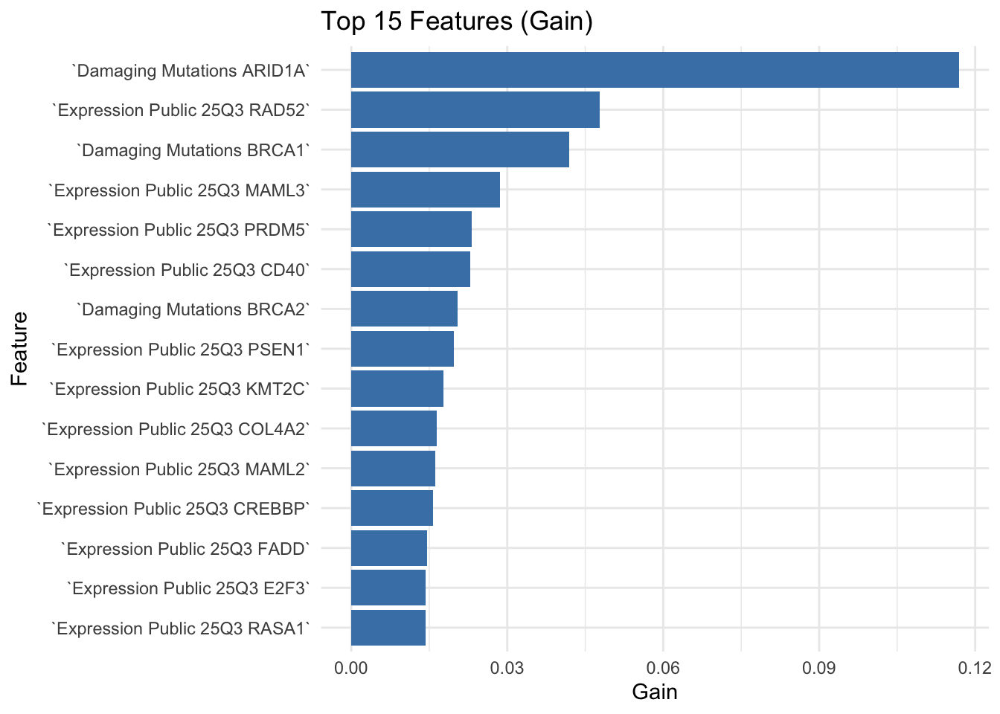

| Metric | Value |
|---|---|
| rmse_test | 0.28140 |
| rmse_random_mean | 0.30660 |
| rmse_random_sd | 0.04669 |
| improvement | 0.02526 |
| z_score | 0.54110 |
| approx_p_value | 0.29420 |
| mae_test | 0.23080 |
| r2_test | -0.25720 |
| spearman_test | 0.14290 |
XGBoost Model Performance Summary
Overview
This report summarizes the performance of the current XGBoost regression model trained on the formatted feature matrix with the outcome scaled to the range [-1, 1].
Interpretation
Compared to a random shuffle of the training labels (null baseline), the model achieved:
- Test RMSE: 0.2814
- Mean shuffled RMSE: 0.3066 (SD 0.0467)
- Absolute improvement (lower RMSE vs. shuffled mean): 0.0253
- Approximate z-score (improvement / SD of shuffled RMSEs): 0.54
- Approximate one-sided p-value: 0.294 (probability a random model is at least this good under a normal approximation)
The positive improvement and low RMSE relative to the shuffled baseline indicate the model captures signal beyond chance, though the modest z-score suggests the margin is limited and further optimization or feature engineering could be beneficial.
R-squared is -0.257 (can be negative for models worse than the mean baseline under scaling). Spearman correlation 0.143 provides a rank-based agreement measure.
Feature Importance (Gain)
The top features by XGBoost gain demonstrate which predictors most contributed to reducing loss across splits.

A full CSV of importance values is saved at Results/feature_importance_gain.csv.
Diagnostic Figures
Predicted vs. True
Shuffled RMSE Distribution
Feature Importance Top 30
Recommendations
- Explore narrower tuning around best hyperparameters (e.g., eta and max_depth) to attempt incremental gains.
- Consider feature grouping or dimensionality reduction (e.g., PCA, pathway aggregation) to amplify signal.
- Evaluate alternative gradient boosting libraries (LightGBM, CatBoost) for potential performance improvements.
- Investigate calibration (e.g., isotonic regression) if prediction distribution needs smoothing.
Session Info
R version 4.3.3 (2024-02-29)
Platform: aarch64-apple-darwin20 (64-bit)
Running under: macOS 26.1
Matrix products: default
BLAS: /Library/Frameworks/R.framework/Versions/4.3-arm64/Resources/lib/libRblas.0.dylib
LAPACK: /Library/Frameworks/R.framework/Versions/4.3-arm64/Resources/lib/libRlapack.dylib; LAPACK version 3.11.0
locale:
[1] C.UTF-8/C.UTF-8/C.UTF-8/C/C.UTF-8/C.UTF-8
time zone: Europe/Copenhagen
tzcode source: internal
attached base packages:
[1] stats graphics grDevices utils datasets methods base
other attached packages:
[1] kableExtra_1.4.0 tidyr_1.3.1 ggplot2_3.5.1 dplyr_1.1.4
[5] data.table_1.14.10 readr_2.1.4 knitr_1.45
loaded via a namespace (and not attached):
[1] gtable_0.3.6 jsonlite_2.0.0 highr_0.10 compiler_4.3.3
[5] tidyselect_1.2.1 xml2_1.3.6 stringr_1.5.1 systemfonts_1.0.5
[9] scales_1.3.0 yaml_2.3.8 fastmap_1.1.1 R6_2.5.1
[13] labeling_0.4.3 generics_0.1.3 htmlwidgets_1.6.4 tibble_3.2.1
[17] munsell_0.5.0 svglite_2.1.3 pillar_1.9.0 tzdb_0.4.0
[21] rlang_1.1.6 utf8_1.2.4 stringi_1.8.3 xfun_0.41
[25] viridisLite_0.4.2 cli_3.6.5 withr_2.5.2 magrittr_2.0.3
[29] digest_0.6.34 grid_4.3.3 rstudioapi_0.17.1 hms_1.1.3
[33] lifecycle_1.0.4 vctrs_0.6.5 evaluate_0.23 glue_1.7.0
[37] farver_2.1.1 fansi_1.0.6 colorspace_2.1-0 rmarkdown_2.25
[41] purrr_1.0.4 tools_4.3.3 pkgconfig_2.0.3 htmltools_0.5.7